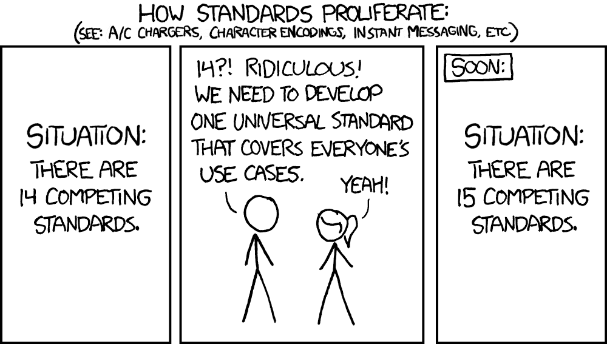
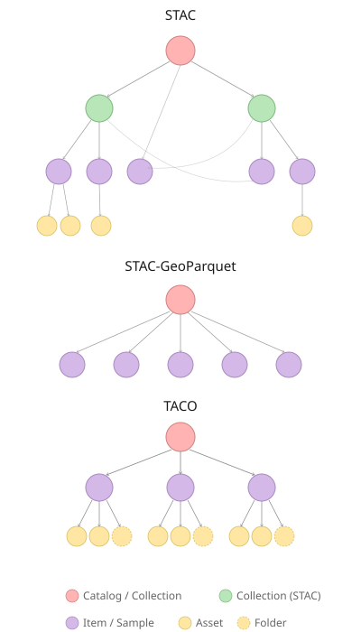
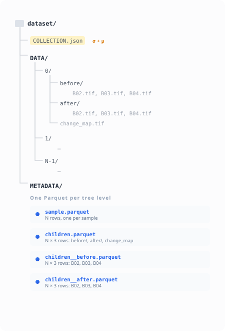
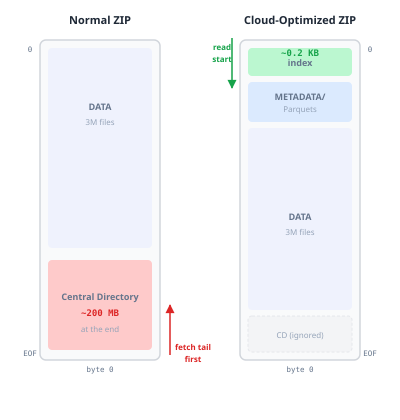
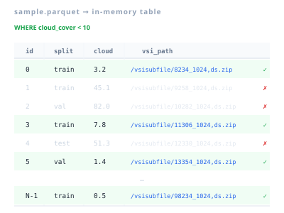
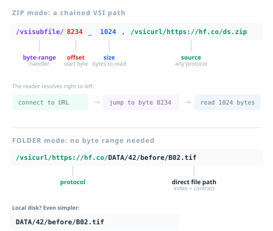

TACO
AI-ready Earth observation datasets
 TACO02 / 9
TACO02 / 9TACO is one layer of the Asterisk stack for AI
TACO03 / 9
xkcd.com/927, CC BY-NC 2.5
AI4EO dataset packaging
There are no 14 competing standards. There are
Zero.
Everyone builds their own folder structure,
their own scripts, their own README.
TACO is not standard number 15.
It's number 1.
TACO04 / 9AI4EO datasets have no standard packaging
Earth observation datasets for machine learning need data and metadata together. Users filter by cloud cover, region, time, split, solar zenith, and dozens of other variables before loading a single pixel. No existing format packages data, metadata, and structure as a queryable portable unit.
STAC stores one JSON per sample: a million samples, a million files. STAC-GeoParquet fixes queries but flattens the hierarchy and doesn't bundle data. TACO solves both.
| STAC | STAC-GP | TACO | |
|---|---|---|---|
| Queryable without server | No | Yes | Yes |
| Hierarchical samples | Yes | No | Yes |
| Structural validation | No | No | Yes |
Random access dataset[i] | No | O(1) | O(1) |
| Access method | Crawl JSONs + HTTP | Parquet + HTTP | Parquet + GDAL VSI |

TACO05 / 9Declare a contract, build your dataset
Before writing a single byte, you declare a contract that fixes the shape of your dataset. Every sample obeys this contract. It has two parts.
The structure (σ) defines the file tree inside each sample: which files and folders exist, their names, and their nesting. Every sample shares the exact same tree.
The metadata (μ) defines what fields exist at each level of the hierarchy. Each non-leaf level generates its own Parquet table, queryable with SQL, with no server needed.
A TACO dataset is valid when every sample satisfies both: contract = σ ∧ μ.

TACO06 / 9How it looks on disk
COLLECTION.json stores the contract and dataset-level fields like license, providers, and spatial extent. DATA/ holds the files: samples are numbered 0, 1, 2, ..., N-1, and the path to any file is predictable from the index and the contract alone.
Metadata lives in Parquet files, one per level of the hierarchy. sample.parquet has one row per sample. children.parquet has one row per child inside each sample. If the structure has subfolders like before/ and after/, each gets its own Parquet with one row per file inside it.
A TACO dataset can exist as a FOLDER (plain directory, supports incremental append) or as a cloud-optimized ZIP (single archive, immutable, byte-range accessible).

TACO07 / 9How it works
The problem with normal ZIP
A ZIP stores its file index, the Central Directory, at the end of the archive. For a dataset with one million samples and three files each, the CD alone weighs around 200 MB. To open anything remotely, you have to fetch those 200 MB from the tail first. This is why many people assume ZIP is slow for large datasets.
Cloud-optimized ZIP flips this
A small index at byte 0 stores offsets to a handful of key files. In TACO, those are the Parquets in METADATA/ and COLLECTION.json. A few hundred bytes instead of hundreds of megabytes.
Once you reach the Parquets, you have pointers to every data file in the archive. The CD at the end becomes irrelevant.
FOLDER mode skips this step.

Metadata loads once, access is instant
When you open a TACO dataset, the reader loads the Parquet files from METADATA/ into in-memory tables. Even for one million samples, the files are small on disk, so this takes a moment. It happens once.
After that, every sample is a direct row lookup. Filtering by cloud cover, split, or region scans an in-memory table. Random access in microseconds.
Each row represents a node in the sample tree. When the node is a file, the reader builds a VSI path, a pointer to the exact bytes on disk or cloud.

From filtered rows to raw bytes
Each row that passed the filter carries a VSI path. Think of it as a URL that works for anything, not just HTTP. /vsicurl/ reads over HTTP. /vsis3/ reads from S3. /vsisubfile/ reads a byte range from any source.
These paths are chainable. /vsisubfile/8234_1024,/vsicurl/https://hf.co/ds.zip tells the reader: connect to this URL, jump to byte 8234, read 1024 bytes. One path, only the bytes you need.
FOLDER mode is the same chain without /vsisubfile/. The files are individual, so there is no byte range to resolve. /vsicurl/https://hf.co/DATA/42/before/B02.tif works just as well.

From query to training loop
TACO slots naturally into ML pipelines. Query the metadata, filter the samples you need, iterate. Your dataloader receives VSI paths and reads them.
VSI paths work the same whether the dataset is on local disk or on a remote server. Download everything and train offline, or stream directly from cloud storage. The format works either way, you choose what fits your setup.

TACO08 / 9Five languages, one reader
with taco.open_writer(collection, "lima-change.zip") as writer:
writer.add(sample)
writer.run()
dataset = taco.open_dataset("https://data.source.coop/major-tom/core-dem/")
peru = dataset.sql("""SELECT id, "dem.rumi::location" FROM dataset
WHERE "geoenrich:admin_countries" = 'Peru' AND "geoenrich:elevation" > 4500""")dataset <- taco::open_dataset("https://data.source.coop/major-tom/core-dem/")
peru <- taco::sql(dataset, r"(SELECT id, "dem.rumi::location" FROM dataset
WHERE "geoenrich:admin_countries" = 'Peru' AND "geoenrich:elevation" > 4500)")using Taco
dataset = Taco.open_dataset("https://data.source.coop/major-tom/core-dem/")
peru = Taco.sql(dataset, """SELECT id, "dem.rumi::location" FROM dataset
WHERE "geoenrich:admin_countries" = 'Peru' AND "geoenrich:elevation" > 4500""")import { openDataset } from "@asterisk-labs/taco";
const dataset = await openDataset(
"https://data.source.coop/major-tom/core-dem/core-dem_MT3000km_0001D_0003L.zip");
const peru = await dataset.read({
filter: { "geoenrich:admin_countries": "Peru", "geoenrich:elevation": { $gt: 4500 } },
});taco_dataset *ds;
taco_open("https://data.source.coop/major-tom/core-dem/", NULL, &ds);
taco_read_options opts = { .pivoted = 1, .location = 1 };
char *view;
taco_sql((const taco_dataset *const *)&ds, 1, &opts, &view);
/* view is DuckDB SQL: run SELECT ... FROM (view) WHERE ... with DuckDB */Every snippet ran here and found the same 492 rows. JavaScript filters rows after it reads them, so it opens the one ZIP that holds all 492.